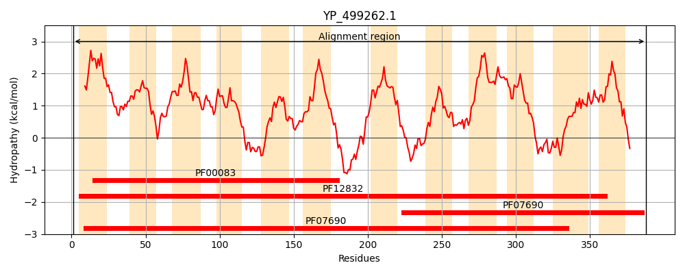
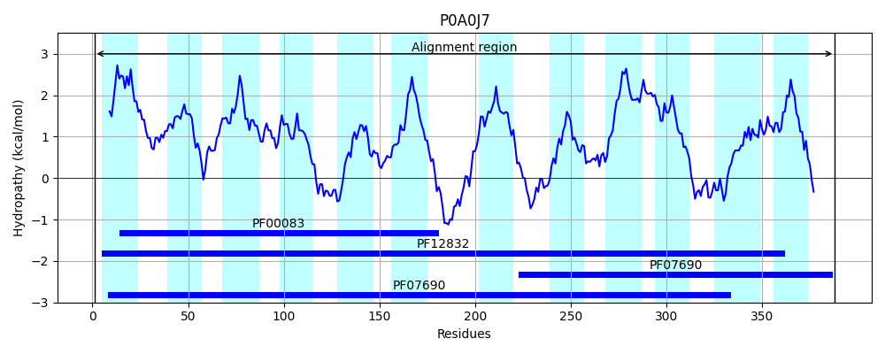
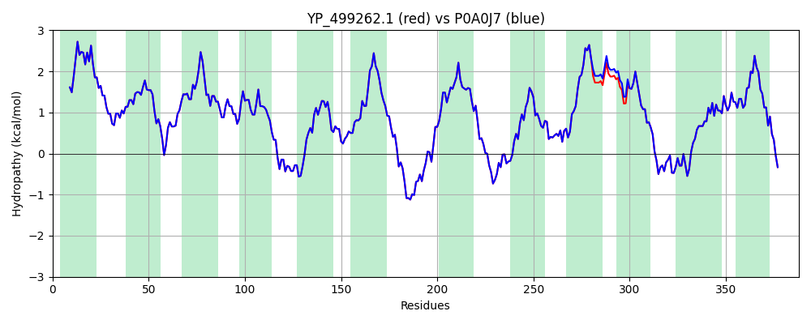

Hit Accession: P0A0J7
Hit TCID: 2.A.1.2.10
Hit Description: gnl|BL_ORD_ID|8533 gnl|TC-DB|P0A0J7|2.A.1.2.10 Quinolone resistance protein norA - Staphylococcus aureus.
Mach Len: 388
e:0.000000
Query TMS Count : 12
Hit TMS Count: 12
TMS-Overlap Score: 11.900000
Predicted Substrates:CHEBI:5584;hydron, CHEBI:35190;diterpene, CHEBI:23765;quinolone
BLAST Alignment:
Score: 1948 , Bit scores: 754 bits, E-value: 0.0e+00, Alignment length: 388, Percentage identity: 100
Query: 1 MNKQIFVLYFNIFLIFLGIGLVIPVLPVYLKDLGLTGSDLGLLVAAFALSQMIISPFGGTLADKLGKKLIICIGLILFSVSEFMFAVGHNFSVLMLSRVIGGMSAGMVMPGVTGLIADISPSHQKAKNFGYMSAIINSGFILGPGIGGFMAEVSHRMPFYFAGALGILAFIMSIVLIHDPKKSTTSGFQKLEPQLLTKINWKVFITPVILTLVLSFGLSAFETLYSLYTADKVNYSPKDISIAITGGGIFGALFQIYFFDKFMKYFSELTFIAWSLLYSVVVLILLVFANDYWSIMLISFVVFIGFDMIRPAITNYFSNIAGERQGFAGGLNSTFTSMGNFIGPLIAGALFDVHIEAPIYMAIGVSLAGVVIVLIEKQHRAKLKEQNM 388
MNKQIFVLYFNIFLIFLGIGLVIPVLPVYLKDLGLTGSDLGLLVAAFALSQMIISPFGGTLADKLGKKLIICIGLILFSVSEFMFAVGHNFSVLMLSRVIGGMSAGMVMPGVTGLIADISPSHQKAKNFGYMSAIINSGFILGPGIGGFMAEVSHRMPFYFAGALGILAFIMSIVLIHDPKKSTTSGFQKLEPQLLTKINWKVFITPVILTLVLSFGLSAFETLYSLYTADKVNYSPKDISIAITGGGIFGALFQIYFFDKFMKYFSELTFIAWSLLYSVVVLILLVFAN YWSIMLISFVVFIGFDMIRPAITNYFSNIAGERQGFAGGLNSTFTSMGNFIGPLIAGALFDVHIEAPIYMAIGVSLAGVVIVLIEKQHRAKLKEQNM
Sbjct: 1 MNKQIFVLYFNIFLIFLGIGLVIPVLPVYLKDLGLTGSDLGLLVAAFALSQMIISPFGGTLADKLGKKLIICIGLILFSVSEFMFAVGHNFSVLMLSRVIGGMSAGMVMPGVTGLIADISPSHQKAKNFGYMSAIINSGFILGPGIGGFMAEVSHRMPFYFAGALGILAFIMSIVLIHDPKKSTTSGFQKLEPQLLTKINWKVFITPVILTLVLSFGLSAFETLYSLYTADKVNYSPKDISIAITGGGIFGALFQIYFFDKFMKYFSELTFIAWSLLYSVVVLILLVFANGYWSIMLISFVVFIGFDMIRPAITNYFSNIAGERQGFAGGLNSTFTSMGNFIGPLIAGALFDVHIEAPIYMAIGVSLAGVVIVLIEKQHRAKLKEQNM 388 | Protein Hydropathy Plots: |
|---|
|  |  |
Pairwise Alignment-Hydropathy Plot:
|
|---|
|  |